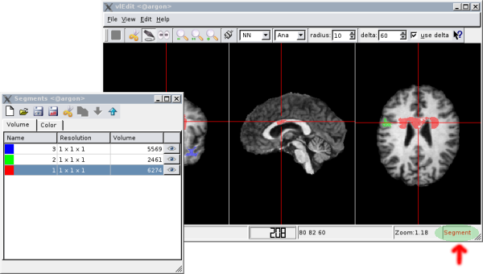
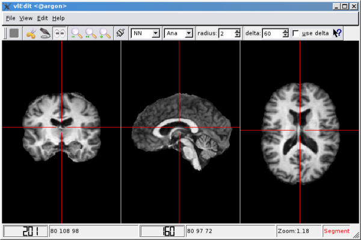
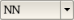
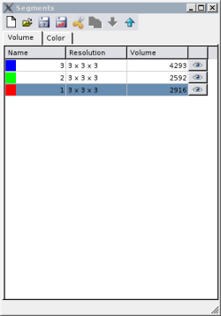
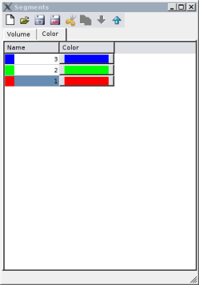

vledit -in anatomie.v -mode seg
or by omitting the parameter '-mode':vledit -in anatomie.v
|  |
| The main and segment window with three masks and segment mode enabled. |
The currently selected mode can be found at the bottom right corner of the main
window.
|  |
| The main window |
The main window gives a coronal, sagittal and axial view of the anatomie. With the given tools, voxels of the current mask can be easily selected or removed in different ways. All important features of vledit can be easily accessed with the toolbar buttons:
| Sets the cursor to delete mode. Every voxel under the cursor will be removed from the current mask. | |
| Sets the cursor to select mode. The voxel under the mouse pointer will be added to the current mask. | |
| Sets the cursor to view mode. The user can move the crossfade and scroll the current view across the brain plane. | |
| / / | With this buttons, the user can zoom-in, zoom-out and zoom to 100%. |
| Connect/Disconnect vledit to the vlserv application. While connected to the server, the program can receive crosshair coordinates from other lipsia applications like vlv or vlview. | |
|  | Selects the active view filter. Available algorithms are Nearest Neighbor (NN) and Bilinear (Bilin) filtering. |
The remaining tools control the behavior of the selection and removing algorithms. Every editing operation (select/remove) on the mask will affect a spheric volume of voxels within a given radius (default: 2). Furthermore, the user can choose to apply a threshold value (delta) to the editing operations. The specification of a delta value and enabling the use delta box has the following effect: all those voxels of the sphere will be ignored that have a higher value than the given threshold.
|  |  |
| the volume tab | the color tab |
The segment window contains a list of all available segments and some tools to
manage them. The segment list comes in two variants:
the volume tab: An entry consists of the following parts: the name of the segment together with his current color, the voxel resolution and the volume. The volume value is adjusted in real-time when the user adds/removes voxels to/from the mask. In the end, the last column contains a switch to turn the visibility on and off.
the color tab: The color table is similar to the volume tab except the second column contains the currently configured mask color. After a click on the colored button a dialog appears and allow the user to change the color of the mask.
The buttons in the toolbar allows the user to manipulate the list of segments in different ways:
| This option saves only the segments which are marked as visible. All other segments will be ignored. | |
| In this case all segments will be saved, visible or not, execpt empty ones. Segment masks with a voxel volume of 0 will be ignored by vlEdit. | |
| This button will delete the currently selected segment. | |
| These two buttons will move the currently selected segment one step up or down within the list. |
vledit -in anatomie.v -mode ana
vledit -in anatomie.v -res N
where N is a float number describing the desired mask resolution. Be aware that 'vledit' will only accept values greater or equal the anatomie resolution. E.g. the user want's to create a mask in 3mm resolution with a 1mm anatomie he has to start 'vledit' as follows:vledit -in anatomie.v -res 3
The output type can be selected with the parameter '-type'. The following example saves the output to a vista bit image.
vledit -in anatomie.v -res 3 -type bit
Max Planck Institute for Human Cognitive and Brain Sciences. Further Information:
lipsia@cbs.mpg.de